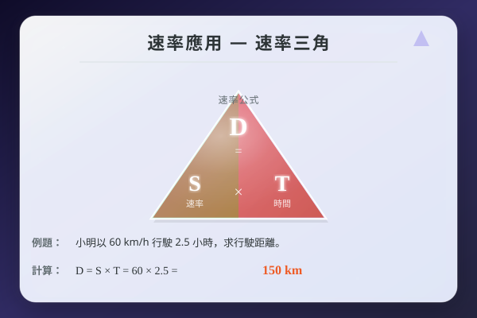

| # | 題目 | 答案 | 類型 |
|---|---|---|---|
| 1 | 甲速率 60 km/h，乙速率 40 km/h。甲和乙的和 = ？差 = ？ | ___ | manual |
| 2 | 距離 240 km，速率 80 km/h。時間 = ？ | ___ | manual |
| 3 | 速率 50 km/h，時間 3 小時。距離 = ？ | 16.67 | auto |
| 4 | 把 10 m/s 換算成 km/h。 | ___ | manual |
| 5 | A、B 兩地相距 150 km。甲由 A 出發往 B，速率 75 km/h。多少小時到達？ | ___ | manual |
| 6 | 兩地相距 240 km。小華速率 65 km/h，小明速率 55 km/h，相向而行。幾小時相遇？ | ___ | manual |
| 7 | 如上題，相遇時小華走了多少 km？ | ___ | manual |
| 8 | 兩車從相距 500 km 的兩地相向而行，甲速率 80 km/h，乙速率 70 km/h。幾小時相遇？相遇時兩車各走多遠？ | ___ | manual |
| 9 | A、B 相距 180 km。甲先出發 1 小時（速率 60 km/h），然後乙才出發相向而行（速率 50 km/h）。乙出發後幾小時相遇？（提示：先減甲獨走距離 | 180 | auto |
| 10 | 爸爸走 90 m/min，兒子走 70 m/min，同向同時出發。多久後相距 300 m？ | ___ | manual |
| 11 | 小明和小華同向跑步。小明速率 6 m/s，小華速率 4 m/s。小明在後 40 m 處開始追。幾秒追上？ | ___ | manual |
| 12 | A 城和 B 城相距 420 km。甲由 A 往 B（55 km/h）；乙由 B 往 A（65 km/h）。幾小時相遇？ | ___ | manual |
| 13 | 一輛巴士先行 2 小時（速率 60 km/h），一輛私家車從後追上（速率 100 km/h）。私家車幾小時追上？ | ___ | manual |
| 14 | 400 m 環形跑道。甲 5 m/s，乙 3 m/s，同向出發。幾秒後甲第一次追上乙？ | ___ | manual |
| 15 | 400 m 環形跑道。甲 5 m/s，乙 3 m/s，相向出發。幾秒後相遇？ | ___ | manual |
| 16 | 環形跑道一圈 500 m。甲 8 m/s，乙 6 m/s，同向出發。甲第二次追上乙需要多少秒？ | ___ | manual |
| 17 | 兩地相距 180 km。甲 50 km/h，乙 40 km/h，相向。幾小時相遇？ | ___ | manual |
| 18 | 甲 70 m/min，乙 50 m/min，同向出發。10 分鐘後相距多少？ | ___ | manual |
| 19 | A、B 兩城，甲由 A 往 B，速率 65 km/h；乙由 B 往 A，速率 55 km/h。兩城相距 360 km。幾小時相遇？ | ___ | manual |
| 20 | 400 m 環形跑道。小明 5 m/s，小華 3 m/s，同向。小明第一次追上小華需時 = ？ | ___ | manual |
| 21 | 一車前 3 小時以 50 km/h 行駛，後 2 小時以 70 km/h 行駛。全程平均速率 = ？ | 25 | auto |
| 22 | 兩車從相距 480 km 的兩城相向而行。甲 85 km/h，乙 75 km/h。幾小時後兩車相距 160 km？（提示：兩車還未相遇，相距 160 km） | ___ | manual |
| 23 | 哥哥速率 120 m/min，弟弟速率 80 m/min。弟弟先出發 10 分鐘，哥哥才出發追趕。哥哥多久追上？ | 12 | auto |
| 24 | 400 m 環形跑道。甲 7 m/s，乙 5 m/s，相向出發。第 3 次相遇需時多少秒？ | ___ | manual |
| 25 | A→B 距離 150 km。甲由 A 往 B（60 km/h），乙由 B 往 A（50 km/h），兩車同時出發。相遇後甲還要多少 km 才到 B？ | ___ | manual |
| 26 | 一車由家到公司，前半程速率 40 km/h，後半程速率 60 km/h。全程平均速率 = ？（提示：設半程距離為 d 或用調和平均） | 0...40 | manual |
| 27 | 甲和乙在 600 m 環形跑道，同地同時同向出發。甲 8 m/s，乙 6 m/s。甲第三次追上乙時，甲一共跑了多少 m？ | ___ | manual |
| 28 | A、B 兩站相距 120 km。一列火車由 A 往 B，速率 100 km/h。同時另一列火車由 B 往 A，速率 80 km/h。兩車在途中相遇。相遇點距離 | ___ | manual |
| 29 | 小明和小強相距 300 m。小明速率 5 m/s，小強速率 3 m/s。若小明追小強（同向），幾秒追上？若兩人相向走，幾秒相遇？ | ___ | manual |
| 30 | 爸爸開車由家往機場，距離 180 km。去程速率 90 km/h，回程因堵車只得 60 km/h。求 (a) 去程用時 (b) 回程用時 (c) 全程平均速率。 | 2 | manual |
| 31 | 運動場環形跑道 400 m。教練和學生同時同地出發。教練速率 5 m/s，學生速率 3 m/s。若同向走，教練第一次追上學生需時多久？若教練要追上學生 2 圈， | ___ | manual |
| 32 | 深圳和廣州相距 140 km。上午 8:00，客車由深圳出發往廣州，速率 80 km/h；同時貨車由廣州出發往深圳，速率 60 km/h。兩車何時相遇？ | ___ | manual |
| 33 | 一條直路上，小明速率 4 m/s，小強速率 6 m/s。小明在前 30 m 處，小強在後。小強要多少秒追上小明？追上時小強跑了多遠？ | ___ | manual |
| 34 | A、B 兩地相距 90 km。甲由 A 出發往 B（50 km/h）；半小時後乙由 B 出發往 A（40 km/h）。乙出發後多久兩人相遇？相遇點離 A 多遠？ | ___ | manual |
| H1 | 兩地相距 270 km。甲 50 km/h，乙 40 km/h，相向而行。幾小時相遇？ | ___ | manual |
| H2 | 甲速率 6 m/s，乙速率 4 m/s，同向同時出發。15 秒後相距多遠？ | ___ | manual |
| H3 | A、B 相距 300 km。甲往 B（70 km/h），乙往 A（60 km/h），同時出發。相遇時甲走了多遠？ | ___ | manual |
| H4 | 在 400 m 環形跑道，哥哥 6 m/s，妹妹 4 m/s，同向出發。哥哥第一次追上妹妹需多久？ | ___ | manual |
| H5 | 一人先走 3 小時（5 km/h），另一人從後追上（8 km/h）。幾小時追上？ | ___ | manual |
| H6 | 兩車從相距 450 km 的兩地相向而行。甲 80 km/h，乙 70 km/h。1.5 小時後兩車相距多遠？ | ___ | manual |
| H7 | 環形跑道 500 m。甲 7 m/s，乙 5 m/s，同向出發。甲第二次追上乙需時多久？ | ___ | manual |
| H8 | A、B 相距 200 km。甲由 A 往 B（60 km/h），乙由 A 往 B（90 km/h）但乙比甲遲出發 1 小時。乙能否在到達 B 之前追上甲？ | ___ | manual |
| H9 | 一車前半程速率 30 km/h，後半程速率 50 km/h。求全程平均速率。（設總距離為 2d） | 0...30 | manual |
| H10 | 在 400 m 環形跑道，甲 5 m/s 和乙 4 m/s 從同一地點同時出發，但方向相反。第 5 次相遇時，兩人各跑了多少 m？ | ___ | manual |
霖楓學苑 · LF Academy · 自動答案生成器 v1.0 · 手動題目請老師覆核